داشبورد یکپارچهٔ مدیریت؛ همهٔ شرکت در یک صفحه
این راهنما توضیح میدهد هر بخش داشبورد چه چیزی نشان میدهد، چطور خوانده میشود و به چه سؤالی جواب میدهد. همهٔ عددهای مثالها از همان دادهای است که داشبورد نشان میدهد.
در یک نگاه
«شرکت نمونه» تجهیزات صنعتی وارد و در چهار شعبهٔ تهران، اصفهان، شیراز و مشهد پخش میکند. تا پیش از این داشبورد، مدیرعامل هر هفته از واحدهای فروش، انبار، بازرگانی و مالی گزارش جداگانه میگرفت؛ گزارشهایی که دیر میرسید و عددهایشان همیشه با هم جور نبود.
داشبورد یکپارچه همین چهار حوزه را از یک منبع داده و در یک صفحه کنار هم میگذارد:
برای چه کسی؟ اول برای مدیرعامل و هیئتمدیره که میخواهند در چند دقیقه وضعیت کل شرکت را ببینند؛ بعد برای مدیران فروش، بازرگانی، انبار و مالی که هر کدام جزئیات حوزهٔ خود را در همان صفحه پیدا میکنند و با بقیه عدد مشترک دارند.
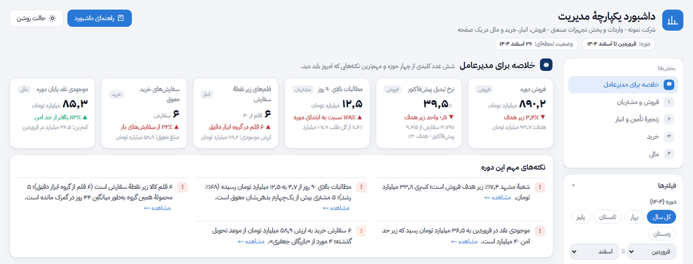
شروع سریع
فیلترها
ستون سمت راست (در گوشی: دکمهٔ «فیلترها» بالای صفحه) سه فیلتر دارد. تعداد فیلترهای فعال کنار عنوان نوشته میشود و «پاک کردن همه» داشبورد را به حالت پیشفرض (کل سال، همهٔ شعبهها، همهٔ گروهها) برمیگرداند.
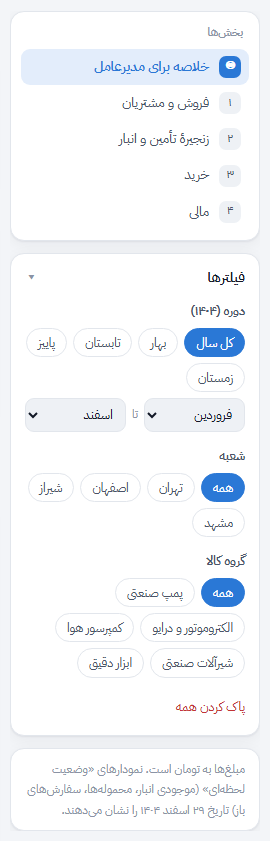
- دوره (۱۴۰۴): با دکمههای فصل یا دو فهرست «از ماه / تا ماه» هر بازهٔ دلخواهی را انتخاب کنید.
- شعبه: تهران، اصفهان، شیراز یا مشهد.
- گروه کالا: پمپ صنعتی، الکتروموتور و درایو، کمپرسور هوا، شیرآلات صنعتی، ابزار دقیق.
بعضی بخشها «وضعیت لحظهای» هستند (مثلاً موجودی انبار امروز) و دوره برایشان معنا ندارد. هر جا فیلتری اثر ندارد، زیر عنوان نمودار یک یادداشت کوچک ⓘ دلیلش را میگوید. جدول زیر خلاصهٔ همین است:
| بخش | دوره | شعبه | گروه کالا |
|---|---|---|---|
| کارتهای خلاصه و نکتههای مهم | ✓ | ✓ | ✓ |
| فروش ماهانه در برابر هدف | ✓ | ✓ | ✓ |
| تحقق هدف شعبهها | ✓ | پررنگسازی | ✓ |
| قیف پیشفاکتور | ✓ | ✓ | ✓ |
| سن مطالبات | ✓ | ✓ | — |
| جدول مشتریان | ✓ | ✓ | فقط ستون فروش |
| ارزش موجودی و هشدار کمبود | — | ✓ | ✓ |
| کالای در راه | — | ✓ | ✓ |
| سفارشهای خرید به تفکیک وضعیت | ✓ | ✓ | ✓ |
| موعد تحویل سفارشهای باز | — | ✓ | ✓ |
| موجودی نقد و جریان نقد | ✓ | — | — |
| از فروش تا سود خالص | ✓ | ✓ | — |
| سودآوری شعبهها | ✓ | پررنگسازی | — |
کارتهای خلاصه
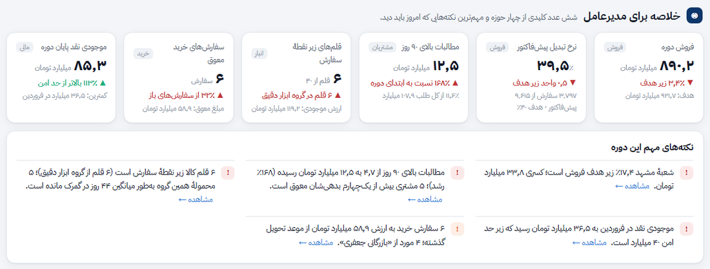
چه چیزی نشان میدهد؟ شش عدد که سلامت چهار حوزه را خلاصه میکنند: فروش دوره، نرخ تبدیل پیشفاکتور، مطالبات بالای ۹۰ روز، قلمهای زیر نقطهٔ سفارش، سفارشهای خرید معوق و موجودی نقد پایان دوره. برچسب خاکستری گوشهٔ هر کارت حوزهٔ آن را میگوید و کلیک روی کارت شما را به نمودار مربوط میبرد.
چطور بخوانیم؟ عدد بزرگ مقدار فعلی است. خط رنگی زیر آن مقایسه است: با هدف، با ابتدای دوره یا با حد امن. ▲ و ▼ جهت تغییر را نشان میدهند و رنگ، خوب یا بد بودن آن را؛ برای همین رشد مطالبات معوق با ▲ قرمز نشان داده میشود.
نکتههای مهم این دوره
چه چیزی نشان میدهد؟ سه تا پنج جملهٔ کوتاه که داشبورد خودش از دادهها میسازد؛ مثل گزارشی که یک تحلیلگر برای مدیرعامل مینویسد. هر جمله با فیلترها عوض میشود.
چطور بخوانیم؟ علامت قرمز یعنی مشکلی که باید پیگیری شود، نارنجی یعنی هشدار و سبز یعنی وضعیت خوب است. نکتهها به ترتیب اهمیت مرتب شدهاند و پیوند «مشاهده» به نمودار پشتیبان هر نکته میرود.
فروش ماهانه در برابر هدف
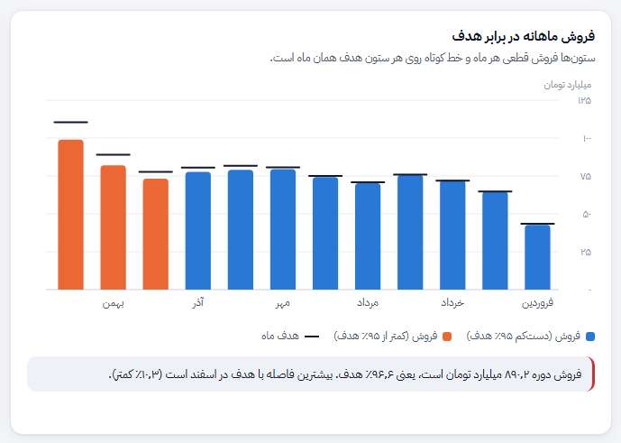
چه چیزی نشان میدهد؟ فروش قطعی هر ماه در دورهٔ انتخابی، کنار هدف همان ماه. ماهها از راست به چپ مرتب شدهاند (فروردین در راست).
چطور بخوانیم؟ اگر بالای ستون زیر خط هدف باشد، آن ماه از هدف عقب مانده است. ستونهایی که کمتر از ۹۵٪ هدف فروختهاند نارنجی میشوند تا بیدرنگ دیده شوند. با بردن نشانگر روی هر ستون، فروش، هدف و درصد تحقق را میبینید. افت فروردین (تعطیلات نوروز) و اوج اسفند (خرید پیش از پایان سال) الگوی فصلی عادی بازار است.
تحقق هدف فروش شعبهها
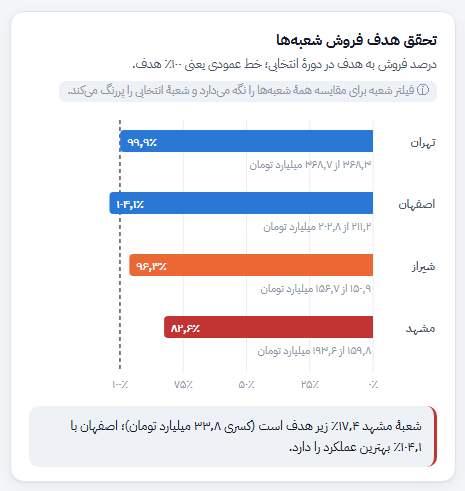
چه چیزی نشان میدهد؟ درصد فروش هر شعبه به هدف آن در دورهٔ انتخابی، همراه مبلغ فروش و هدف زیر هر نوار.
چطور بخوانیم؟ نوار آبی یعنی شعبه دستکم ۹۷٪ هدف را آورده، نارنجی بین ۹۰ تا ۹۷٪ و قرمز زیر ۹۰٪. اگر شعبهای را در فیلتر انتخاب کنید، بقیه کمرنگ میشوند ولی برای مقایسه سر جایشان میمانند.
قیف پیشفاکتور تا فاکتور
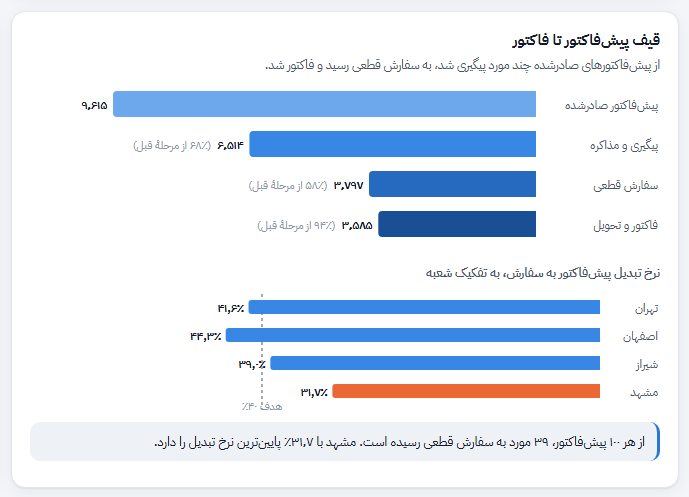
چه چیزی نشان میدهد؟ از پیشفاکتورهایی که صادر شده، چند مورد پیگیری شد، چند مورد به سفارش قطعی رسید و چند مورد فاکتور و تحویل شد. نمودار کوچک پایین، «نرخ تبدیل» هر شعبه را با هدف ۴۰٪ مقایسه میکند.
چطور بخوانیم؟ عدد داخل پرانتز درصد عبور از مرحلهٔ قبل است. بزرگترین ریزش معمولاً بین «پیگیری» و «سفارش قطعی» است؛ همان جایی که قیمت، موجودی کالا و پیگیری فروشنده تعیینکننده است.
سن مطالبات
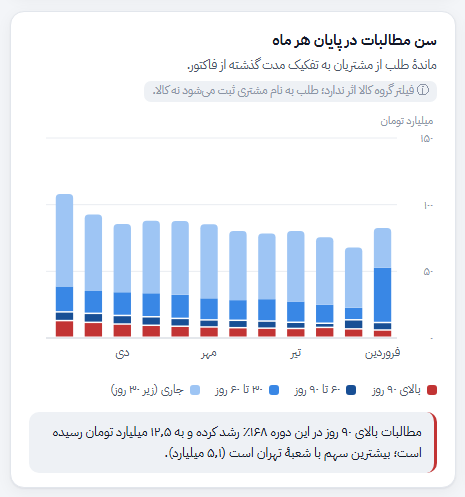
چه چیزی نشان میدهد؟ کل طلب شرکت از مشتریان در پایان هر ماه که بر اساس زمان گذشته از فاکتور به چهار دسته تقسیم شده است: جاری (زیر ۳۰ روز)، ۳۰ تا ۶۰، ۶۰ تا ۹۰ و بالای ۹۰ روز.
چطور بخوانیم؟ بخش قرمز پایین هر ستون طلبهای بالای ۹۰ روز است؛ پرخطرترین بخش که احتمال سوخت شدنش بیشتر است. اگر این بخش ماهبهماه بلندتر شود، حتی وقتی کل طلب ثابت است، کیفیت مطالبات بدتر شده است. فیلتر گروه کالا روی این نمودار اثر ندارد چون طلب به نام مشتری ثبت میشود.
جدول مشتریان: فروش، اعتبار و مطالبات
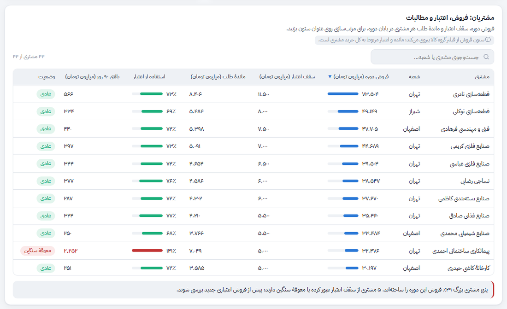
چه چیزی نشان میدهد؟ برای هر مشتری: فروش دوره، سقف اعتبار، ماندهٔ طلب در پایان دوره، درصد استفاده از اعتبار، مبلغ بالای ۹۰ روز و وضعیت.
چطور بخوانیم؟ با کلیک روی عنوان هر ستون جدول مرتب میشود (کلیک دوباره ترتیب را برعکس میکند) و کادر جستوجو نام مشتری یا شعبه را پیدا میکند. نوار کوچک «استفاده از اعتبار» تا ۸۵٪ سبز، تا ۱۰۰٪ نارنجی و بالاتر از آن قرمز است. برچسب وضعیت یکی از اینهاست: «عادی»، «نزدیک سقف»، «عبور از سقف» و «معوقهٔ سنگین» (بیش از یکچهارم بدهی بالای ۹۰ روز).
ارزش موجودی و هشدار کمبود
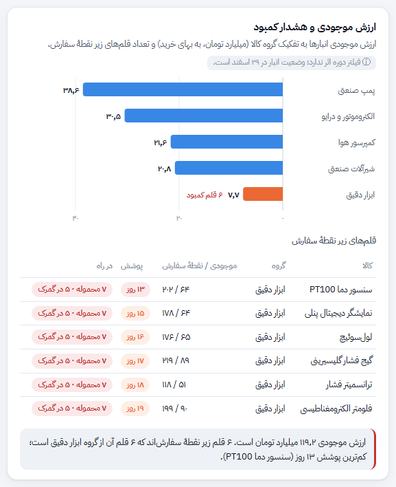
چه چیزی نشان میدهد؟ ارزش موجودی انبار هر گروه کالا به بهای خرید، و فهرست قلمهایی که موجودیشان از «نقطهٔ سفارش» کمتر شده است.
چطور بخوانیم؟ نوار نارنجی یعنی آن گروه قلم کمبود دارد. در فهرست پایین، «پوشش» میگوید با سرعت فروش فعلی موجودی چند روز دیگر تمام میشود و ستون «در راه» نشان میدهد آیا محمولهای از همان گروه در مسیر است و کجا مانده.
کالای در راه به تفکیک مرحله
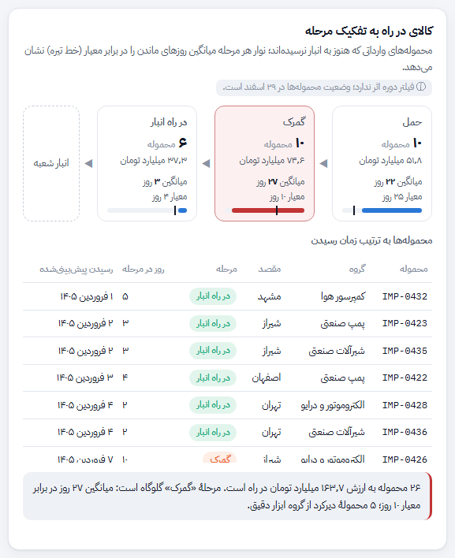
چه چیزی نشان میدهد؟ محمولههای وارداتی که هنوز به انبار نرسیدهاند، در سه مرحله: «حمل» (حمل بینالمللی)، «گمرک» (ترخیص) و «در راه انبار» (حمل داخلی). برای هر مرحله تعداد، ارزش و میانگین روزهای ماندن آمده است.
چطور بخوانیم؟ نوار پایین هر کادر میانگین روزهای ماندن است و خط تیرهٔ عمودی روی آن «معیار» همان مرحله. اگر میانگین بیش از ۳۰٪ از معیار بیشتر شود، کادر قرمز میشود. در جدول پایین، محمولههایی که بیش از یکونیم برابر معیار در مرحلهٔ خود ماندهاند برچسب قرمز دارند.
سفارشهای خرید به تفکیک وضعیت
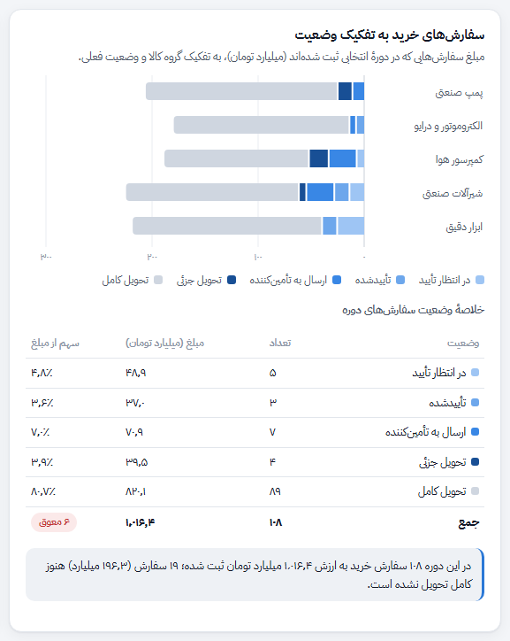
چه چیزی نشان میدهد؟ مبلغ سفارشهای خریدی که در دورهٔ انتخابی ثبت شدهاند، برای هر گروه کالا، به تفکیک وضعیت فعلی: در انتظار تأیید، تأییدشده، ارسال به تأمینکننده، تحویل جزئی و تحویل کامل.
چطور بخوانیم؟ بخش خاکستری سفارشهای بستهشده (تحویل کامل) است و بخشهای آبی سفارشهای باز؛ هرچه آبی پررنگتر، سفارش به تحویل نزدیکتر. روی هر بخش نشانگر را ببرید تا مبلغ و سهمش را ببینید.
موعد تحویل سفارشهای باز
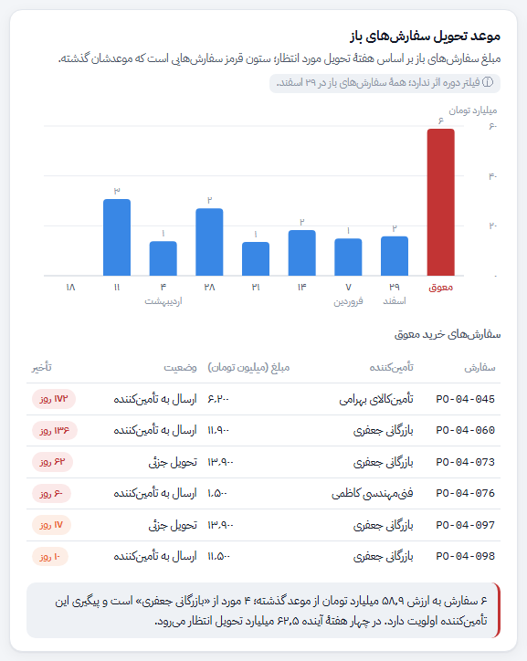
چه چیزی نشان میدهد؟ همهٔ سفارشهای باز بر اساس هفتهای که تحویلشان انتظار میرود. ستون اول (راست) سفارشهایی است که موعدشان گذشته است؛ زیر نمودار، فهرست همین سفارشهای معوق با تعداد روز تأخیر آمده است.
چطور بخوانیم؟ عدد بالای هر ستون تعداد سفارش است و ارتفاع آن مبلغ. زیر هر ستون روز شروع آن هفته نوشته شده است. اگر بیشتر سفارشهای معوق از یک تأمینکننده باشد، مشکل از همان تأمینکننده است نه از واحد خرید.
موجودی نقد و جریان نقد ماهانه
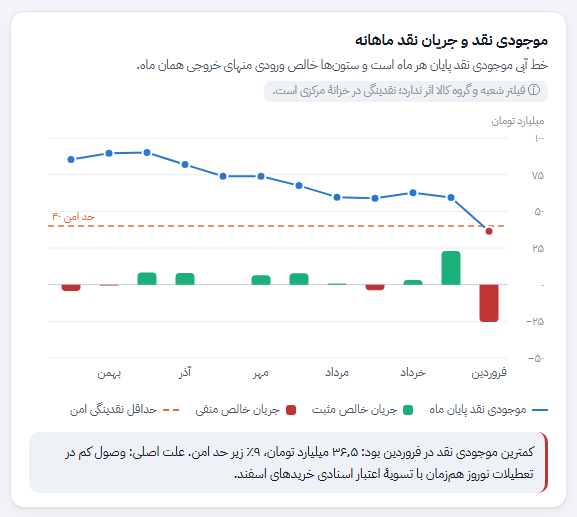
چه چیزی نشان میدهد؟ موجودی نقد شرکت در پایان هر ماه (خط آبی) و جریان خالص نقد همان ماه، یعنی وصول از مشتریان منهای پرداختها (ستون سبز یا قرمز). خطچین نارنجی «حداقل نقدینگی امن» (۴۰ میلیارد تومان) است.
چطور بخوانیم؟ هر نقطهای که زیر خطچین برود قرمز میشود؛ یعنی شرکت در آن ماه برای پرداختهای ضروری حاشیهٔ امن نداشته است. این نمودار از فیلتر شعبه و گروه کالا پیروی نمیکند، چون نقدینگی در خزانهٔ مرکزی نگهداری میشود.
از فروش تا سود خالص
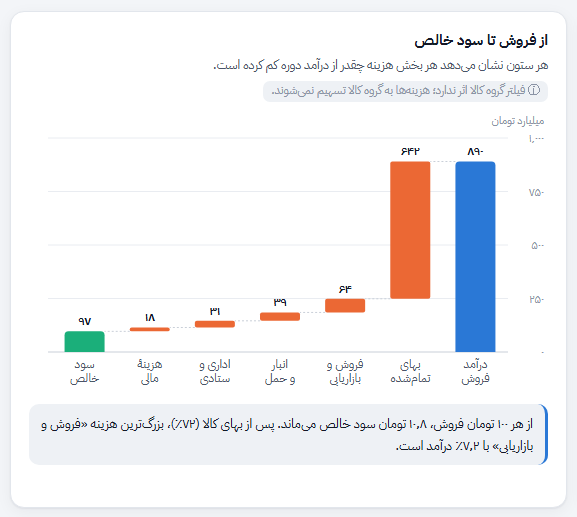
چه چیزی نشان میدهد؟ درآمد فروش دوره (ستون آبی راست)، سپس هر دسته هزینه بهصورت یک پلهٔ نارنجی رو به پایین (بهای تمامشدهٔ کالا، فروش و بازاریابی، انبار و حمل، اداری و ستادی، هزینهٔ مالی) و در انتها سود خالص (ستون سبز).
چطور بخوانیم؟ طول هر پله مبلغ آن هزینه است؛ هرچه پله بلندتر، سهم بیشتری از درآمد را خورده است. با فیلتر شعبه همین تصویر را برای هر شعبه جداگانه میبینید.
سودآوری شعبهها
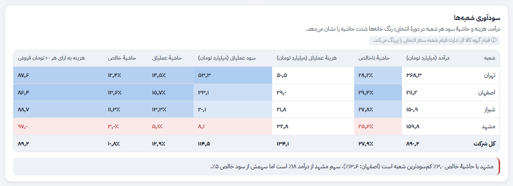
چه چیزی نشان میدهد؟ برای هر شعبه: درآمد، حاشیهٔ ناخالص، هزینهٔ عملیاتی، سود عملیاتی، حاشیهٔ عملیاتی، حاشیهٔ خالص و «هزینه به ازای هر ۱۰۰ تومان فروش». سطر آخر جمع کل شرکت است.
چطور بخوانیم؟ در ستونهای حاشیه و سود، آبی پررنگتر یعنی بهتر و خانهٔ قرمز یعنی ضعیفترین شعبه در آن ستون. در ستون «هزینه به ازای ۱۰۰ تومان» برعکس است: عدد کمتر بهتر است.
پرسشهای رایج
عددها از کجا میآیند و هر چند وقت بهروز میشوند؟
در نسخهٔ واقعی، داشبورد هر شب از نرمافزار حسابداری، سامانهٔ انبار و پروندهٔ خرید خارجی خوانده میشود.
چرا با تغییر دوره، نمودار انبار و محمولهها عوض نمیشود؟
چون اینها «وضعیت لحظهای»اند: موجودی انبار و محمولههای در راه در ۲۹ اسفند. یادداشت ⓘ زیر عنوان هر نمودار میگوید کدام فیلتر روی آن اثر ندارد و چرا.
«نقطهٔ سفارش» را چطور حساب کردهاید؟
نقطهٔ سفارش موجودیای است که وقتی به آن برسیم باید دوباره سفارش بدهیم تا تا رسیدن محمولهٔ بعدی کالا تمام نشود. اینجا حدود مصرف یکماهونیم هر کالا در هر شعبه در نظر گرفته شده، چون واردات بهطور معمول حدود شش هفته طول میکشد.
هدف فروش هر ماه چطور تعیین شده است؟
هدف سالانه بر اساس فروش سال قبل و رشد برنامهریزیشده تعیین و بعد بر اساس الگوی فصلی بازار (افت فروردین، اوج اسفند) بین ماهها و شعبهها پخش شده است.
میتوانم داشبورد را در گوشی ببینم؟
بله. در گوشی، فیلترها زیر دکمهٔ «فیلترها» جمع میشوند و بخشها یکی زیر دیگری میآیند. جدولهای پهن را میتوانید افقی بکشید.
حالت تیره چطور فعال میشود؟
داشبورد بهطور پیشفرض از تنظیم دستگاه شما پیروی میکند. با دکمهٔ «حالت روشن / حالت تیره» در بالای صفحه میتوانید آن را دستی عوض کنید.
واژهنامه
- پیشفاکتور
- پیشنهاد قیمت رسمی که پیش از خرید برای مشتری فرستاده میشود و هنوز تعهدی ایجاد نمیکند.
- نرخ تبدیل
- درصد پیشفاکتورهایی که به سفارش قطعی تبدیل شدهاند.
- تحقق هدف
- نسبت فروش واقعی به هدف فروش همان دوره، به درصد.
- سقف اعتبار
- بیشترین مبلغی که مشتری اجازه دارد به شرکت بدهکار باشد.
- مطالبات بالای ۹۰ روز
- بخشی از طلب که بیش از ۹۰ روز از تاریخ فاکتورش گذشته و هنوز وصول نشده است.
- نقطهٔ سفارش
- سطحی از موجودی که با رسیدن به آن باید سفارش خرید تازه ثبت شود.
- پوشش موجودی
- تعداد روزهایی که موجودی فعلی با سرعت فروش عادی کفایت میکند.
- معیار مرحله
- مدت زمان عادی ماندن محموله در هر مرحله (حمل ۲۵، گمرک ۱۰ و حمل داخلی ۴ روز).
- اعتبار اسنادی
- روش پرداخت در خرید خارجی که بانک پرداخت به فروشنده را تضمین میکند و در سررسید باید تسویه شود.
- حاشیهٔ ناخالص
- درصدی از فروش که پس از کسر بهای تمامشدهٔ کالا میماند.
- حاشیهٔ خالص
- درصدی از فروش که پس از کسر همهٔ هزینهها (کالا، عملیاتی و مالی) بهعنوان سود میماند.
- حداقل نقدینگی امن
- کمترین موجودی نقدی که شرکت برای پرداختهای ضروری یک ماه (حقوق، اقساط، عوارض) باید در دست داشته باشد.